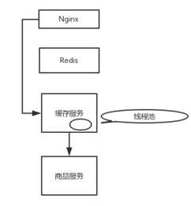
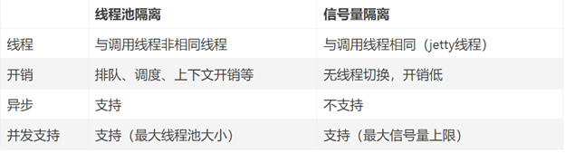
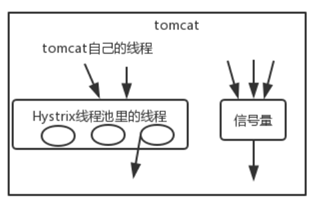
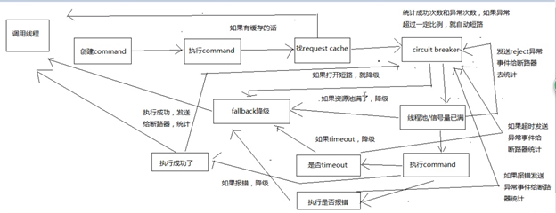
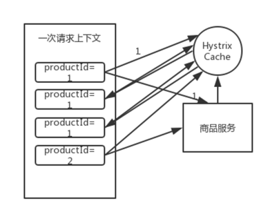
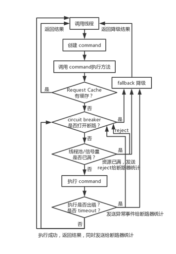

什么是Hystrix?
Hystrix可以让我们在分布式系统中对服务间的调用进行控制，加入一些调用延迟或者依赖故障的容错机制。
Hystrix 的设计原则
- 对依赖服务调用时出现的调用延迟和调用失败进行控制和容错保护。
- 在复杂的分布式系统中，阻止某一个依赖服务的故障在整个系统中蔓延。比如某一个服务故障了，导致其它服务也跟着故障。
- 提供 fail-fast（快速失败）和快速恢复的支持。
- 提供fallback优雅降级的支持。
- 支持近实时的监控、报警以及运维操作。
Hystrix更加细节的设计原则
- 阻止任何一个依赖服务耗尽所有的资源，比如 tomcat 中的所有线程资源。
- 避免请求排队和积压，采用限流和 fail fast 来控制故障。
- 提供fallback降级机制来应对故障。
- 使用资源隔离技术，比如bulkhead（舱壁隔离技术）、swim lane（泳道技术）、circuit breaker（断路技术）来限制任何一个依赖服务的故障的影响。
- 通过近实时的统计/监控/报警功能，来提高故障发现的速度。
- 通过近实时的属性和配置热修改功能，来提高故障处理和恢复的速度。
- 保护依赖服务调用的所有故障情况，而不仅仅只是网络故障情况。
Hystrix资源隔离?
定义
要把对某一个依赖服务的所有调用请求，全部隔离在同一份资源池内，不会去用其它资源了，这就叫资源隔离。哪怕对这个依赖服务，比如说商品服务，现在同时发起的调用量已经到了 1000，但是线程池内就10个线程，最多就只会用这 10 个线程去执行。不会对商品服务的请求，因为接口调用延时，将tomcat内部所有的线程资源全部耗尽。Hystrix进行资源隔离，其实是提供一个抽象，叫Command。把对某一个依赖服务的所有调用请求，全部隔离在同一份资源池内，对这个依赖服务的所有调用请求，全部走这个资源池内的资源，不会去用其他的资源。Hystrix最基本的资源隔离技术,就是线程池隔离技术
- 利用HystrixCommand获取单条数据
- 利用HystrixObservableCommand批量获取数据
从Nginx开始，缓存都失效了，那么Nginx通过缓存服务去调用商品服务。缓存服务默认的线程大小是10个，最多就只有10个线程去调用商品服务的接口。即使商品服务接口故障了，最多就只有 10 个线程会 hang 死在调用商品服务接口的路上，缓存服务的 tomcat 内其它的线程还是可以用来调用其它的服务。
- Hystrix实现资源隔离，主要有两种技术线程池和信号量。默认情况下，Hystrix使用线程池模式。
线程池机制
HystrixCommand command = new HystrixCommand(arg1, arg2); //HystrixCommand主要用于仅仅返回一个结果的调用
HystrixObservableCommand command = new HystrixObservableCommand(arg1, arg2); //HystrixObservableCommand主要用于可能会返回多条结果的调用
- 执行command要从4个方法选一个: execute(), queue(), observe(), toObservable()
- execute(), queue()仅对HystrixCommand适用
- execute(): 同步调用，调用后block，直到依赖服务返回单条结果或异常
- queue(): 异步调用，返回一个Future，后面可以通过future获取结果
- observe(): 订阅一个Observable对象，Observable代表是依赖服务的返回结果，获取一个代表结果的Observable对象的拷贝对象。是立即执行construct方法，拿到多行结果。
- toObservable(): 返回一个Observab对象，没有执行construct方法，延迟调用。如果订阅这个对象subscribe方法时，才会执行command获取返回结果。
信号量机制
信号量的资源隔离只是起到一个开关的作用。比如，服务A的信号量大小为10，那么就是说它同时只允许有10个tomcat线程来访问服务A，其它的请求都会被拒绝，从而达到资源隔离和限流保护的作用。
线程池与信号量区别

线程池隔离技术，是用Hystrix自己的线程去执行调用；而信号量隔离技术，是直接让tomcat线程去调用依赖服务。信号量隔离，只是一道关卡，信号量有多少，就允许多少个tomcat线程通过它，然后去执行。

- 适用场景线程池技术，适合绝大多数场景，比如说我们对依赖服务的网络请求的调用和访问、需要对调用的timeout进行控制（捕捉timeout超时异常）。信号量技术，适合说你的访问不是对外部依赖的访问，而是对内部的一些比较复杂的业务逻辑的访问，并且系统内部的代码，其实不涉及任何的网络请求，那么只要做信号量的普通限流就可以了，因为不需要去捕获timeout类似的问题。
Hystrix执行流程
- Hystrix请求缓存(request cache)如果command开启了请求缓存，而且这个调用结果在缓存中存在，就直接从缓存返回结果
- 短路器0检测command对应的依赖服务是否打开短路器，如果打开，hystrix不执行command，执行fallback降级机制。
- 检测线程池/队列/semaphore是否满如果以上已满，不会执行command，直接执行fallback降级机制。
- 执行command如果基于线程池，有一个timeout机制。即HystrixCommand.run()或HystrixObservableCommand.construct()的执行，超过了timeout时长的话，那么command所在线程会抛出一个TimeoutException,timeout也会执行fallback降级机制，不会管run()或construct()返回值。
- 注意点不可能终止Hystrix管理线程池中一个调用依赖服务timeout的线程，只能给外部抛出一个TimeoutException，由主线程来捕获再降级处理。
4种调用fallback的降级机制的时机
- run()或construct()抛异常
- 短路器打开
- 线程池/队列/信号量满了
- command执行超时
Hystrix的8大执行流程
构建一个HystrixCommand或HystrixObservableCommand,HystrixCommand主要用于仅仅返回一个结果的调用,HystrixObservableCommand主要用 于可能会返回多条结果的调用。
调用Command的执行方法,执行Command发起一次对依赖服务的调用,执行command要从4个方法选一个：execute(), queue(), observe(), toObservable()。
- execute(),queue()仅对HystrixCommand适用;
- execute(): 同步调用，调用后block，直到依赖服务返回单条结果或异常;
- queue(): 异步调用，返回一个Future，后面可以通过future获取结果;
- observe(): 订阅一个Observable对象，Observable代表是依赖服务的返回结果，获取一个代表结果的Observable对象的拷贝对象。是立即执行construct方法，拿到多行结果。
- toObservable(): 返回一个Observab对象，没有执行construct方法，延迟调用。如果订阅这个对象subscribe方法时，才会执行command获取返回结果。
检查是否开启请求缓存
如果开启request cache, 而这个调用结果在缓存中存在，那么直接从缓存中返回。检查是否开启短路器
如果短路器打开，那么hystrix就不会执行command，直接执行fallback降级机制。检测线程池/队列/semaphore是否已满
如果已满，不会执行command，而直接走fallback降级机制。执行command
- 调用HystrixObservableCommand.construct()或HystrixCommand.run()来实际执行这个command。
- HystrixCommand.run()返回一个单条结果，或者抛出一个异常
- HystrixObservableCommand.construct()返回一个Observable对象，可以获取多条结果
- 如果command执行超时，那么改线程会抛出TimeoutException，会执行fallback降级机制，不会管run()或construct()的返回值。
短路健康检查
Hystrix会将每一个依赖服务的调用成功，失败，拒绝，超时等事件，都会发送给circuit breaker断路器。短路器就会对调用成功/失败/拒绝/超时等事件的次数进行统计。调用fallback降级机制 
- run()或construct()抛出一个异常
- 短路器打开
- 线程池/队列/信息量满
- Command超时，Hystrix会调用fallback降级机制
- 降级机制设置一些默认返回值
Hystrix核心技术之请求缓存

用法
检测是否开启请求缓存(request cache)，是否由请求缓存，如果有，直接取缓存返回结果。概念
请求上下文，每个web应用中, Hystrix在一个filter中，对每个请求增加一个请求上下文。Tomcat中每次请求，就是一个请求上下文。一个请求上下文中会执行N多代码，调用N多个依赖服务。在一个请求上下文中，如果有多个command（假设参数一样，调用结构一样，返回结果也就一样），可以让第一次的command执行返回的结果，缓存在内存中，然后这个请求上下文中，后续对这个command的执行都从内存中取缓存结果。好处
不用在一次请求上下文中反复多次执行一样的command，避免重复执行网络请求，提升整个请求的性能。具体使用
- 实现Hystrix请求上下文过滤器并注册
// 定义HystrixRequestContextFilter类，实现Filter接口 public class HystrixRequestContextFilter implements Filter{ ... } ...... // 然后将该filter对象注册到SpringBoot Application中 @Bean public FilterRegistrationBean filterRegistrationBean() { FilterRegistrationBean filterRegistrationBean = new FilterRegistrationBean(new HystrixRequestContextFilter()); filterRegistrationBean.addUrlPatterns("/*"); return filterRegistrationBean; } command重写getCacheKey()方法
public class GetProductInfoCommand extends HystrixCommand<ProductInfo> { private static final HystrixCommandKey KEY = HystrixCommandKey.Factory.asKey("GetProductInfoCommand"); ... /** * 每次请求的结果，都会放在Hystrix绑定的请求上下文上 * * @return cacheKey 缓存key */ @Override public String getCacheKey() { return "product_info_" + productId; } /** * 将某个商品id的缓存清空 * * @param productId 商品id */ public static void flushCache(Long productId) { HystrixRequestCache.getInstance(KEY, HystrixConcurrencyStrategyDefault.getInstance()).clear("product_info_" + productId); } } }
- 实现Hystrix请求上下文过滤器并注册
基于本地缓存的fallback降级
- Hystrix出现以下四种情况,都会去调用fallback降级机制
- 断路器处于打开的状态
- 资源池已满（线程池+队列/信号量）
- Hystrix调用各种接口，或者访问外部依赖，比如MySQL、Redis、Zookeeper、Kafka等等，出现了任何异常的情况。
- 访问外部依赖的时候，访问时间过长，报了TimeoutException异常。
- 两种典型降级机制
- 纯内存数据内存中维护一个 ehcache，作为一个纯内存的基于 LRU 自动清理的缓存，让数据放在缓存内，fallback从ehcache中获取数据
- 默认值fallback直接返回一个默认值在HystrixCommand，降级逻辑的书写，是通过实现getFallback()接口；而在HystrixObservableCommand中，则是实现resumeWithFallback()方法。
- 纯内存数据
Hystrix 断路器执行原理
RequestVolumeThreshold请求数
HystrixCommandProperties.Setter().withCircuitBreakerRequestVolumeThreshold(int)表示在滑动窗口中，至少有多少个请求，才可能触发断路Hystrix经过断路器的流量超过了一定的阈值，才有可能触发断路。ErrorThresholdPercentage异常比例
HystrixCommandProperties.Setter().withCircuitBreakerErrorThresholdPercentage(int)表示异常比例达到多少，才会触发断路，默认值是 50(%)。如果断路器统计到的异常调用的占比超过了一定的阈值，比如说在 10s 内，经过断路器的流量达到了 30 个，同时其中异常访问的数量也达到了一定的比例，比如 60% 的请求都是异常（报错 / 超时 / reject），就会开启断路。SleepWindowInMilliseconds 断路休息时间
HystrixCommandProperties.Setter().withCircuitBreakerSleepWindowInMilliseconds(int)断路开启，也就是由 close 转换到 open 状态（close -> open）。那么之后在 SleepWindowInMilliseconds 时间内，所有经过该断路器的请求全部都会被断路，不调用后端服务，直接走 fallback 降级机制。而在该参数时间过后，断路器会变为 half-open 半开闭状态，尝试让一条请求经过断路器，看能不能正常调用。如果调用成功了，那么就自动恢复，断路器转为 close 状态。Enabled断路器开关
HystrixCommandProperties.Setter().withCircuitBreakerEnabled(boolean)如果设置为true的话，直接强迫打开断路器，相当于是手动断路了，手动降级，默认值是false。
ForceClosed手动断路开关: 关
HystrixCommandProperties.Setter().withCircuitBreakerForceClosed(boolean)如果设置为 true，直接强迫关闭断路器，相当于手动停止断路了，手动升级，默认值是 false。
Hystrix线程池隔离与接口限流

- 原理Hystrix 通过判断线程池或者信号量是否已满，超出容量的请求，直接 Reject 走降级，从而达到限流的作用。限流是限制对后端的服务的访问量，比如说你对 MySQL、Redis、Zookeeper 以及其它各种后端中间件的资源的访问的限制，其实是为了避免过大的流量直接打死后端的服务。
- 线程隔离技术Hystrix 对每个外部依赖用一个单独的线程池，这样的话，如果对那个外部依赖调用延迟很严重，最多就是耗尽那个依赖自己的线程池而已，不会影响其他的依赖调用。
- 线程池机制的优点
- 隔离服务。任何一个依赖服务被隔离在线程池内，即使自己线程池资源满了，也不会影响其他服务调用。
- 方便引入新的依赖服务。即使新的依赖服务有问题，也不影响其他服务调用。
- 故障恢复。当一个有故障的服务变好后，可以通过清空线程池，快速恢复该服务调用。
- 健康报告。线程池的健康状态随时报告，比如成功、失败、拒绝、超时的次数统计，然后接近实时的热修改调用配置，不用停机。
- 基于线程池的异步本质，在同步调用之上，构建一层异步调用层。
- 线程池机制的缺点
- 增加CPU开销。
- 每个command的执行依托独立线程，会进行排队，调度，上下文切换。Hystrix官方统计过额外开销，相比于可用性和稳定性的提升，是可以接受的。Hystrix semaphore 技术可以用来限流和削峰，但是不能用来对调研延迟的服务进行timeout和隔离。
- 基于timeout机制为服务接口调用超时提供安全保护如果你不对各种依赖服务接口的调用做超时控制，来给你的服务提供安全保护措施，那么很可能你的服务就被各种垃圾的依赖服务的性能给拖死了。
Hystrix核心总结
- Hystrix内部工作原理，8大执行步骤和流程
- 资源隔离多个依赖服务，做资源隔离，避免任何一个依赖服务故障导致服务资源耗尽而崩溃，高可用。
- 请求缓存对同一个request内多个相同command，使用request cache，提供性能。
- 熔断基于断路器，采集异常情况，如报错，超时，拒绝，短路，一段时间不能访问，直接降级。
- 降级服务提供的容错机制，fallback逻辑。
- 限流通过线程池，或信号量，限制对某个后端服务或资源的访问量，直接降级。
- 超时避免因某个依赖服务性能太差，导致大量线程卡住在这个依赖服务。